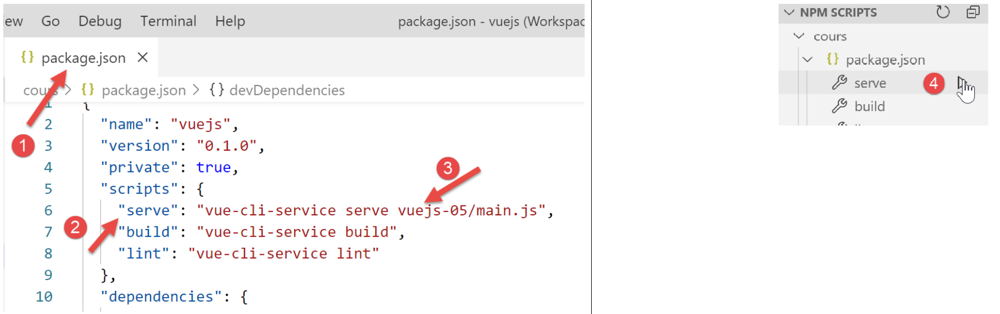

7. 项目 [vuejs-05]：指令 [v-for]
项目 [vuejs-05] 包含指令 [v-for]：

7.1. 主脚本 [main.js]
主脚本 [main.js] 的代码与先前项目中的脚本 [main.js] 完全相同。
7.2. 主组件 [App]
组件 [App] 的代码如下：
<template>
<b-container>
<b-card>
<b-alert show variant="success" align="center">
<h4>[vuejs-05] : attribut [v-for]</h4>
</b-alert>
<VFor />
</b-card>
</b-container>
</template>
<script>
import VFor from "./components/VFor.vue";
export default {
name: "app",
components: {
VFor
}
};
</script>
- 第 7、14、19 行：组件 [App] 调用组件 [VFor]；
7.3. 组件 [VFor]
视觉呈现效果如下：


组件 [VFor] 的代码如下：
<template>
<div>
<!-- 下拉列表 -->
<b-dropdown id="dropdown" text="Options">
<b-dropdown-item v-for="(option,index) in options"
:key="option.id"
@click="select(index)">{{option.text}}</b-dropdown-item>
</b-dropdown>
<!-- 按钮 -->
<b-button class="ml-3"
variant="primary"
@click="generateErrors"
v-if="!error">Générer une liste d'erreurs</b-button>
<!-- 提示 -->
<b-alert show variant="danger" v-if="error" class="mt-3">
Les erreurs suivantes se sont produites :
<br />
<ul>
<li v-for="(erreur,index) in erreurs" :key="index">{{erreur}}</li>
</ul>
</b-alert>
</div>
</template>
<!-- 脚本 -->
<script>
export default {
name: "VFor",
// 组件的静态属性
data() {
return {
// 错误列表
erreurs: [],
// 是否出错
error: false,
// 菜单选项列表
options: [
{ text: "option 1", id: 1 },
{ text: "option 2", id: 2 },
{ text: "option 3", id: 3 }
]
};
},
// 方法
methods: {
// 生成错误列表
generateErrors() {
this.erreurs = ["erreur 1", "erreur 2", "erreur 3"];
this.error = true;
},
// 用户已选择一个选项
select(index) {
alert("Vous avez choisi : " + this.options[index].text);
}
}
};
</script>
注释
- 第 4 行：<b-dropdown> 标签用于定义一个下拉列表 [1]，其形式为一个按钮，点击该按钮即可查看列表 [2] 中的选项。 [text=’Options’] 定义了按钮上显示的文本 [1]；
- 第 5-7 行：<dropdown-item> 标签定义了下拉列表中的一个项目；
- 第5行：属性[v-for]表示，对于组件中第37至41行属性[options]中的每个元素[option]，都应重复使用<dropdown-item>标签。 [index] 代表 [0, 1, ..., n] 列表中该元素的序号。元素名称 [option] 以及索引名称均可自定义。也可以写成 [<b-dropdown-item v-for="(o,i) in options" :key="o.id" @click="select(i)">{{o.text}}</b-dropdown-item>]；
- 第 6 行：如果遗漏 [key] 属性，ESLint 会触发警告。[key] 属性的值必须保持不变。 因此，该元素的值 [index] 也不合适。 因为如果删除该元素，列表中位于其后面的元素的 [index] 值将减 1。因此，这里采用 [option.id] 作为键值（第 38-40 行），该值在删除元素时不会改变。 属性 [key] 是 DOM（文档对象模型）的再生优化组件，用于在列表需要再生时由 [Vue.js] 进行处理。 请注意 [:key] 的命名，因为 [key] 具有动态值；
- 第 7 行：当用户点击列表中的某个元素时，将调用 [select(index)] 方法（第 49-51 行）；
- 第 7 行：选项的文本将采用第 37-41 行定义的值 [option.text]；
- 第 10 行：按钮 [3]。[class=’ml-3] 表示左边距 (m) 为 3 个间隔符。 [@click="generateErrors"] 表示当按钮上执行 [click] 时，将调用第 45-48 行中的方法 [generateErrors]。 [v-if="!error"] 表示按钮的显示取决于第 35 行静态属性 [error] 的值；
- 第15-21行：一个类型为[danger] [4]的提示，同样由第35行的静态属性[error]控制。 属性 [class=’mt-3’]（顶部间距 3 个间隔符）用于设定该提示与上方元素之间的间距；
- 第27行：标签 HTML <br /> 表示换行；
- 第18行：无序列表的开始 [ul=unordered list]；
- 第19行：标签 <li> 定义了列表 <ul> 中的一个元素。这里同样使用指令 [v-for] 来多次生成该标签。 此处的重复次数等于第33行数组[erreurs]中的元素个数。此处使用了[:key=index]属性。 此前曾提到，列表元素的索引无法有效区分列表中的不同元素，因为一旦删除某个元素，后续所有元素的索引都会发生变化。但在此处这并不重要，因为错误列表中的元素不太可能被删除；
- 第 19 行：该元素用于显示列表 [erreurs] 中的元素 [erreur]；
- 第 30-43 行：[template] 中的所有动态元素均为组件的属性。此处不存在由父组件设定值的 [props] 类型属性；
- 第 48-55 行：方法 [generateErrors] 生成错误列表，该列表将通过第 16-18 行的 <ul> 标签显示。 此外，该方法还修改了静态属性 [error]，既用于显示该错误列表（第 15 行），也用于隐藏生成按钮（第 13 行）；
7.4. 项目执行
